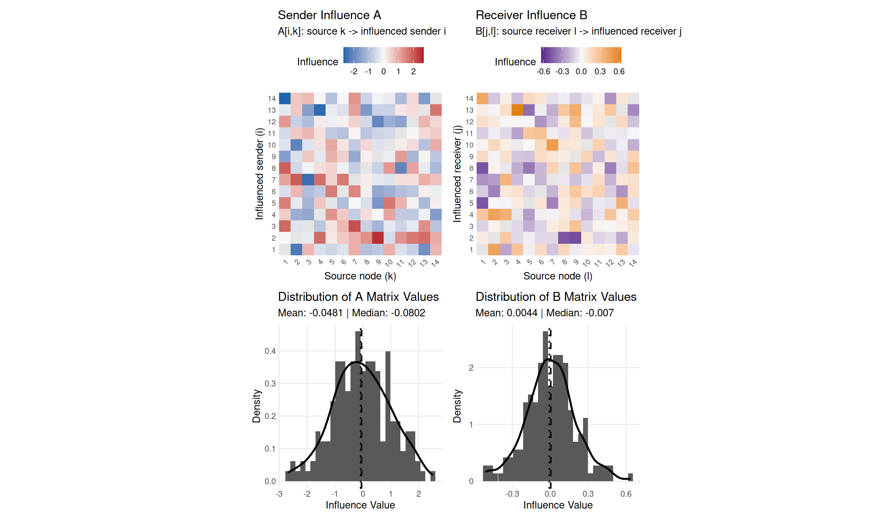

Social Influence Regression (SIR) for longitudinal network data.
Overview
The sir package implements the Social Influence Regression model of Minhas & Hoff (2025) for directed relational data observed over time. It explains network influence – lagged, model-implied channels through which one actor’s past behavior predicts another’s future behavior – using observable covariates, via a bilinear (low-rank) regression.
The linear predictor is
eta_ijt = g(mu_ijt) = theta^T z_ijt + sum_{k,l} x_klt a_ik b_jlwhere a_ik = sum_r alpha_r W_r[i,k] and b_jl = sum_r beta_r W_r[j,l] express the sender/receiver influence matrices A and B through influence covariates W. Equivalently eta = theta^T z + (A X_t B^T)_{ij}, and mu = g^{-1}(eta).
SIR estimates conditional temporal association unless your design justifies a causal interpretation. Treat “influence” as a model term unless temporal ordering, exogeneity of W/Z, unmeasured confounding, lag construction, and the proposed intervention are defensible for the substantive question.
The main inputs play distinct roles:
| Input | Dimension | Role |
|---|---|---|
Y |
n1 x n2 x T |
outcome network (counts, continuous, or 0/1) |
X |
n1 x n2 x T |
lagged signal that flows through influence (e.g. log(Y_{t-1}+1) / infl_scale for forecast-compatible count models) |
W |
n1 x n1 x p |
sender-side influence covariates that parameterize A (and B for one-mode fits) |
W_recv |
n2 x n2 x p2 |
optional receiver-side influence covariates for full-bilinear bipartite fits |
Z |
n1 x n2 x q x T |
exogenous dyadic covariates with direct effects (theta) |
Installation
install.packages("remotes")
remotes::install_github("netify-dev/sir")
# from a local checkout
install.packages("devtools")
devtools::install(".")Usage
library(sir)
# simulate a small example (or use your own Y/W/X/Z, or data(icews))
dat <- sim_sir(m = 14, T_len = 80, p = 2, q = 2, family = "poisson", seed = 42)
fit <- sir(dat$Y, W = dat$W, X = dat$X, Z = dat$Z, family = "poisson", seed = 1)
ci <- confint(fit) # cluster-robust by default when supported
coef_table <- data.frame(
term = names(coef(fit)),
estimate = round(unname(coef(fit)), 3),
cluster_low = round(ci[, 1], 3),
cluster_high = round(ci[, 2], 3),
row.names = NULL
)
print(coef_table, row.names = FALSE)
#> term estimate cluster_low cluster_high
#> (Z) Z1 0.231 0.205 0.258
#> (Z) Z2 -0.369 -0.386 -0.352
#> (alphaW) W2 0.309 0.141 0.477
#> (betaW) W1 -0.162 -0.188 -0.136
#> (betaW) W2 0.115 0.098 0.133
mu0 <- predict(fit) # fitted expected counts
W_scen <- dat$W # preserve the observed W structure
W1 <- W_scen[, , 1]
off <- row(W1) != col(W1)
W1[off] <- W1[off] + sd(W1[off], na.rm = TRUE)
W_scen[, , 1] <- W1
mu1 <- predict(fit, newdata = list(W = W_scen, X = dat$X, Z = dat$Z))
delta <- mu1 - mu0
scenario_table <- data.frame(
baseline_mean = mean(mu0, na.rm = TRUE),
scenario_mean = mean(mu1, na.rm = TRUE),
mean_change = mean(delta, na.rm = TRUE),
median_change = median(delta, na.rm = TRUE),
p90_abs_change = unname(quantile(abs(delta), 0.9, na.rm = TRUE)),
row.names = NULL
)
print(signif(scenario_table, 4), row.names = FALSE)
#> baseline_mean scenario_mean mean_change median_change p90_abs_change
#> 1.129 0.4291 -0.7004 -0.6081 1.278
A <- fit$A # rows = influenced i, columns = source k
diag(A) <- NA # self-influence is not modeled
ord <- order(abs(A), decreasing = TRUE, na.last = NA)[1:5]
influence_table <- data.frame(
source_node = ((ord - 1) %/% nrow(A)) + 1,
influenced_node = ((ord - 1) %% nrow(A)) + 1,
influence = round(A[ord], 3)
)
print(influence_table, row.names = FALSE)
#> source_node influenced_node influence
#> 1 14 -2.682
#> 4 13 -2.592
#> 9 2 2.507
#> 3 7 -2.497
#> 2 1 -2.287
plot(fit, which = 1:4) # influence heatmaps + distributions
vcov(fit), confint(fit), and tidy(fit, conf.int = TRUE) use cluster-robust uncertainty by default for supported static fits, both directed and symmetric (undirected). For dynamic (4D) W the default accessors fall back to classical Wald inference (an explicit type = "cluster" still errors); use boot_sir(fit, type = "dyad") for dynamic W and for full-bilinear bipartite fits. Request classical intervals anytime with se.type = "classical".
The bundled icews dataset (50 countries x 95 months of inter-state conflict) provides a larger real-data example:
data(icews)
ifit <- sir(icews$Y, W = icews$W, X = icews$X, Z = icews$Z, family = "poisson", seed = 1)
c(converged = ifit$convergence, se_reliable = ifit$se_reliable)See vignette("sir_overview") for a full walkthrough from simulation to substantive interpretation.
Estimation methods
-
Alternating GLM/IRLS (
method = "ALS", default): alternates GLM/IRLS updates for sender and receiver influence. The"ALS"method name is retained for API compatibility. -
BFGS (
method = "optim"): direct optimization of the full likelihood.
Features
- Poisson, Normal, and Binomial families
- Directed one-mode, symmetric/undirected, bipartite/rectangular, and full-bilinear bipartite (
W_recv) networks - Static and dynamic (time-varying) influence covariates
- Cluster-robust inference by default for supported static fits; classical, HC0 sandwich, bootstrap, and jackknife inference remain available via
vcov()/boot_sir() - Model-implied scenario prediction via
predict(fit, newdata = ...)and scenario helpersget_scen_vals()/get_scen_array() - Network visualization via
plot_sir_network() - broom support:
tidy(),glance(),augment()for modelsummary / tidyverse